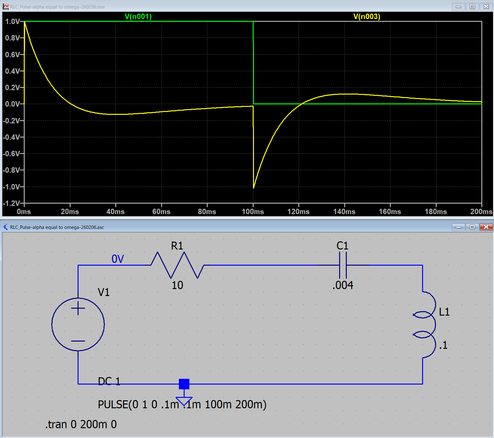
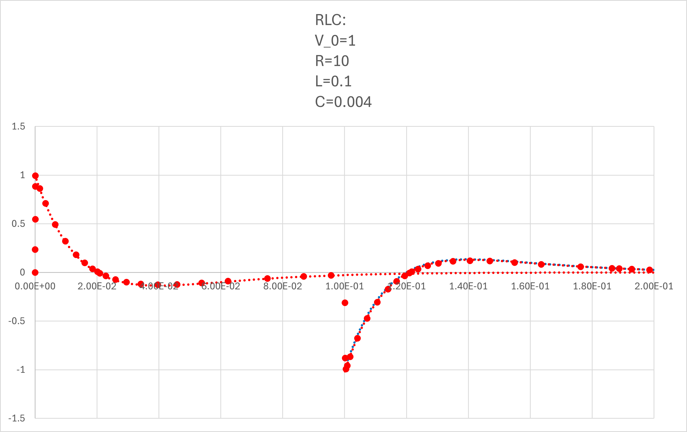

１６ー６．電圧で考えてみる（RLC回路）: α = ω0
まずは，コイルの電圧 ，から
α = ω0
0< t < t0
\(\Large I_1(t) = \displaystyle \frac{V_0}{L} \cdot \ t \cdot e^{- \alpha t} \)
t0 < t
\(\Large I_2(t) = \displaystyle \frac{V_0}{L} \left[ t \cdot e^{- \alpha t} - (t-t_0) \cdot e^{- \alpha (t-t_0)} \right] \)
VL ： コイルの電圧
0 < t < t0
\(\Large \displaystyle V_{L1} = L \ \frac{d}{dt} I(t) = V_0 \frac{d}{dt} ( \ t \cdot e^{- \alpha t}) \)
\(\Large \displaystyle = V_0 ( e^{- \alpha t} - \alpha \ t \cdot e^{- \alpha t}) \)
\(\Large \displaystyle = V_0 ( 1 - \alpha \ t ) \ e^{- \alpha t} \)
t0 < t
\(\Large I_2(t) = \displaystyle \frac{V_0}{L} \left[ t \cdot e^{- \alpha t} - (t-t_0) \cdot e^{- \alpha (t-t_0)} \right] \)
第一項は上の計算と同じ，第二項もt-t0 = T，とすれば同じ計算になるので，
\(\Large V_{L2} = \displaystyle L \ \frac{d}{dt} I_2(t) \)
\(\Large = V_0 ( 1 - \alpha \ t ) \ e^{- \alpha t} - V_0 ( 1 - \alpha \ (t-t_0) ) \ e^{- \alpha (t-t_0)} \)
となり，ステップオフの場合は，
第一項 ： 最初のステップオンの際の波形（たとえば，0→1）
第二項 ： t=t0，において，1→0，のように，逆のステップを入力した波形
なので，ステップオフ後，の波形は，
ステップオンの波形の残り ＋ マイナスのステップの波形 の和
となるわけです．
実際に，LTspice，でシミュレートしてみましょう．ここ，と同様に，
V0 : 1 V
R : 10 Ω
L : 0.1 H
C : 0.004 F
とすると，
\(\Large \displaystyle \omega_0 = \frac{1}{\sqrt{0.1 \times 0.04} } = 50 \ (1/s) \)
\(\Large \displaystyle \alpha \equiv \frac{10}{2 \times 0.1} = 50 \ (1/s) \)
となり，α = ω0，の条件となります．
LTspiceでシミュレートすると，

となります．式と当てはめてみると，

と一致することがわかります（全領域で）．
青点線，が右辺第二項，で右辺第一項との和が，シミュレーションと一致することがわかります．
次ページは，コンデンサの電圧を考えてみましょう．